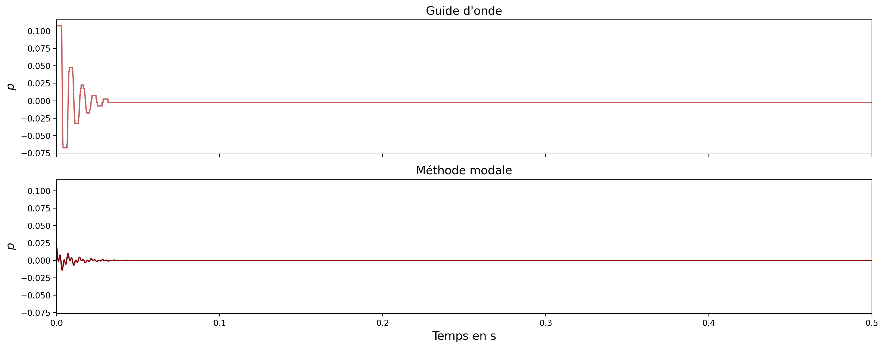
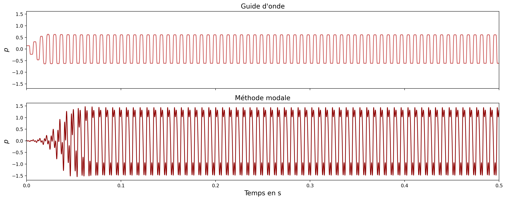
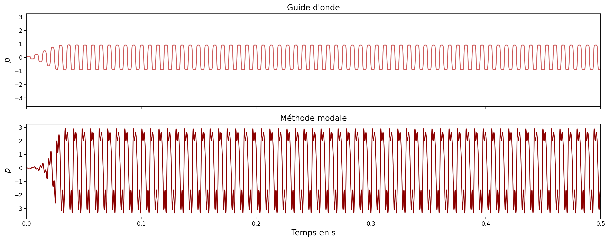
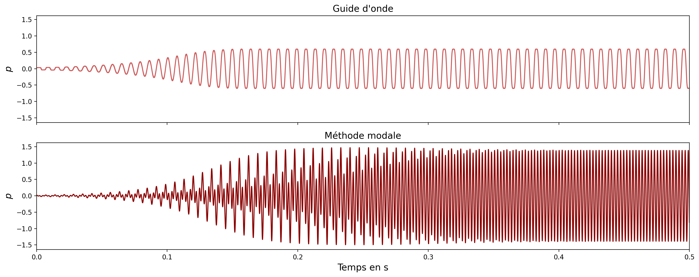
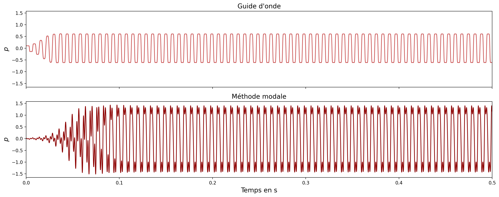
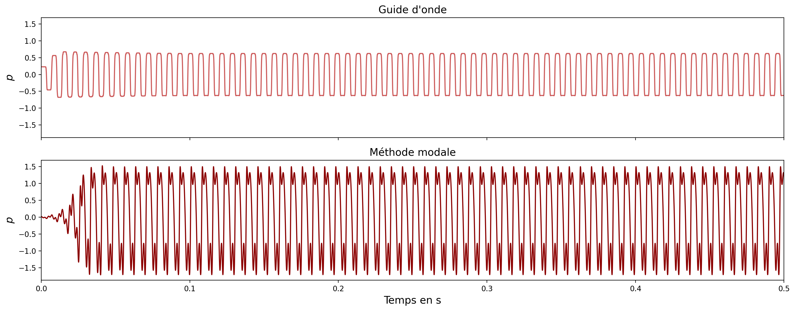

Auto-oscillations des instruments de musique : modèles, simulations, descripteurs et cartographies
Projet de recherche dans le cadre du master ATIAM
Clarinette
À gauche : guide d'onde, à droite : modèle modal.
l = 60e-2 m
c0 = 340 m/s
Variations en fonction de gamma.
gamma = 0.2 ; zeta = 0.4

gamma = 0.6 ; zeta = 0.4

gamma = 0.9 ; zeta = 0.4

Variations en fonction de zeta.
gamma = 0.6 ; zeta = 0.1 -> La clarinette quintoie (avec le modèle modal)

gamma = 0.6 ; zeta = 0.3

gamma = 0.6 ; zeta = 0.6

Violon (corde de sol)
Guide d'onde : variations en fonction de vb = gamma
l = 33e-2 m
beta = 0.3
Fb = 1 N
vb = 0.2

vb = 0.4

vb = 0.5

vb = 0.6